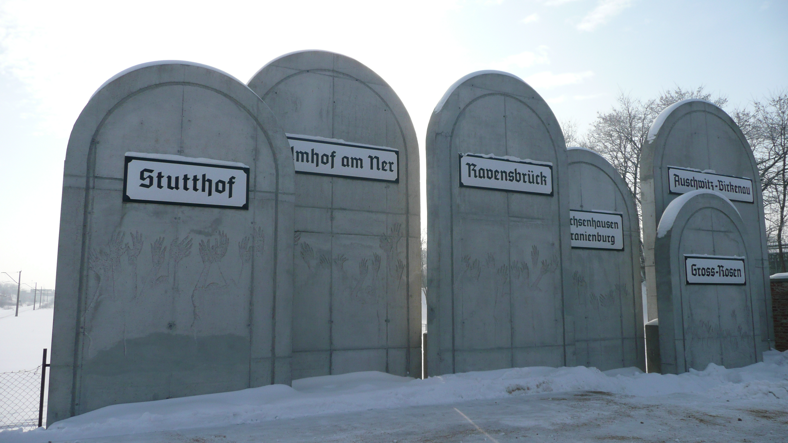
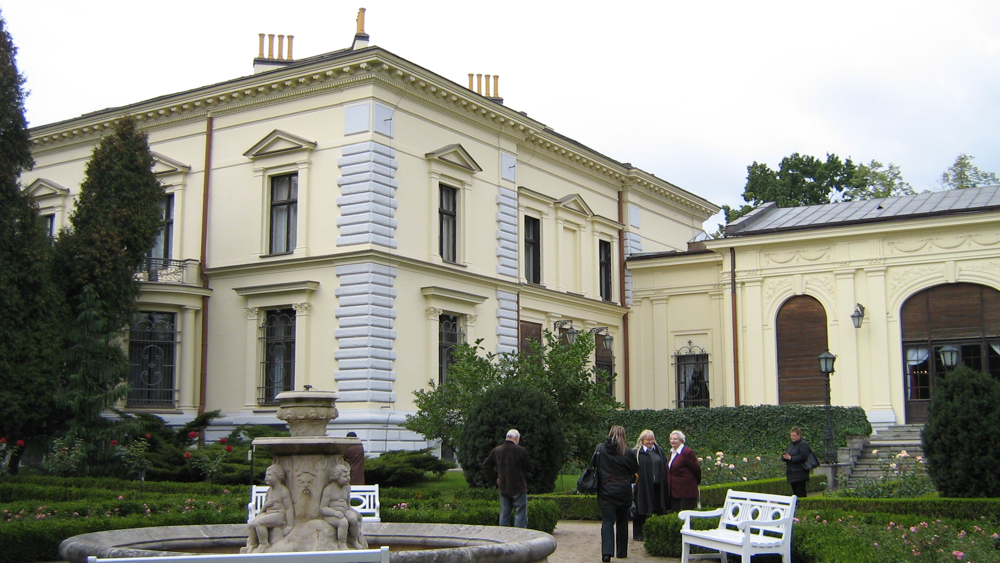
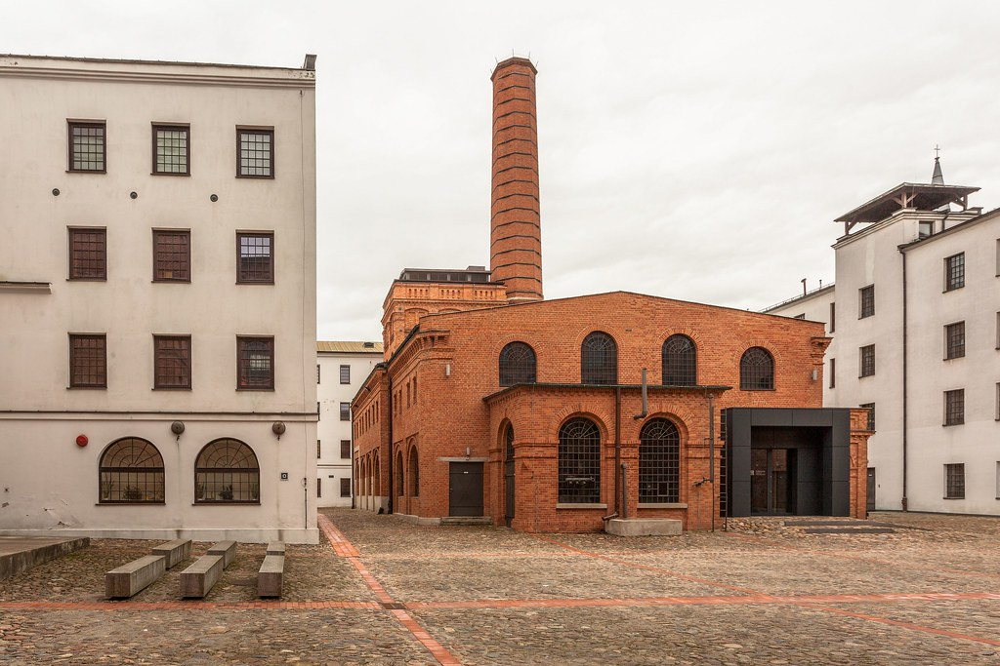

What to see in Łódź?
ManufakturaThe Manufaktura is an arts centre, shopping mall, and leisure complex in Łódź, Poland. A major tourist asset of the city, it includes the largest public square in Łódź, which acts as a venue for cultural and sports events. The Manufaktura opened on 17 May 2006, after 5 years of planning and the subsequent 4 years of construction. The total area of the complex is 27 hectares (67 acres). The work involved the renovation of an old textile factory building. The Manufaktura is located in the central part of the city, in the former industrial complex founded by Izrael Poznański, which is known also as the filming location of the novel by Władysław Reymont titled The Promised Land about the industrialization of the city of Łódź.
RadegastRadogoszcz station (German: Bahnhof Radegast) is a historic railway station in Łódź, Poland. The station, which was originally built between 1926 and 1937, was used extensively during the The Holocaust. It served as the Umschlagplatz for transporting Jews from the Łódź Ghetto to the extermination camps during Operation Reinhard. The "loading platform" is in Marysin, a neighbourhood in the city's Bałuty district

PiotrkowskaPiotrkowska Street (Polish: ulica Piotrkowska), the main artery of Łódź, Poland, is one of the longest commercial thoroughfares in Europe, with a length of around 4.2 km. It is one of the major tourist attractions of the city. It runs longitudinally in the straight line between the Liberty Square (Plac Wolności) and the Independence Square (Plac Niepodległości). From the very beginning this street was the central axis, around which the city grew bigger, and its development spontaneously gave the present shape to its centre. At first the city was mainly the highway, but later it changed into the city's showcase, the leisure and shopping centre, where the life of growing industrial agglomeration could be observed.
Edward Herbst's VillaThe pearl of the palaces of Lodz, impressive interiors of a mansion that reflect the life of a wealthy family of factory owners, and currently the Museum of Art in Lodz and one of the few systems in Europe that makes it possible for the blind to visit the museum – this is how Herbst Palace Museum could be described in a nutshell.
Central Museum of TextilesFirst attempts to create an organized collection of textiles in the area date back to 1952, when Krystyna Kondratiukowa led to establishing a Weaving Department in the Museum of Art in Łódź. Owing to the success of this enterprise, the department was transformed into a branch of the Museum of Art.As an independent organizational unit, the museum has functioned since 1960, when the Museum of the History of Textiles was established. It was renamed to the Central Museum of Textiles in 1975.